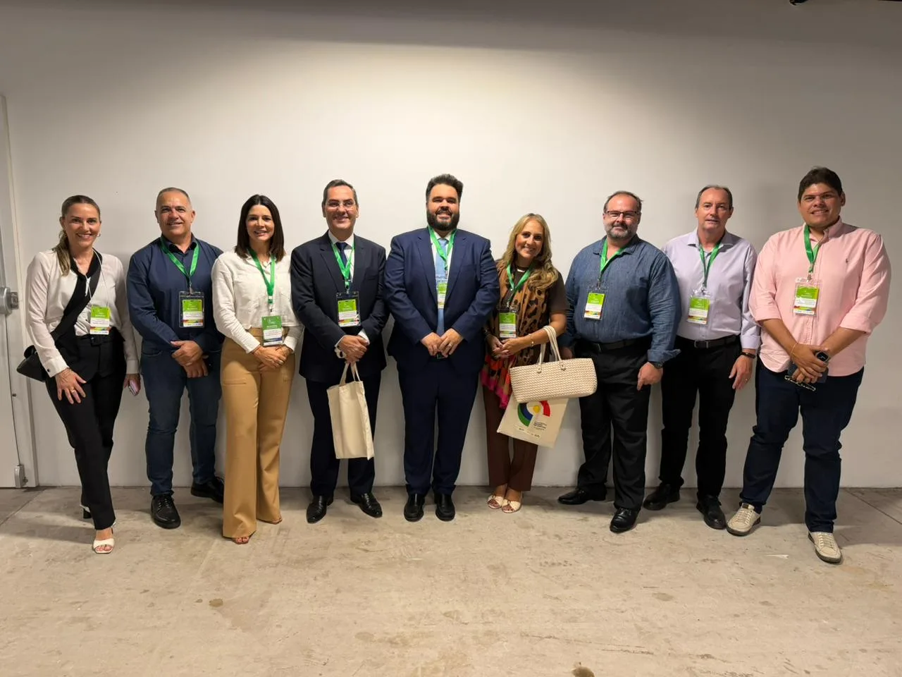

Dr. Jeferson Costa participa da II Conferência Nacional do Trabalho representando o transporte de cargas de Minas Gerais
Entre os dias 3 e 5 de março de 2026, foi realizada, em São Paulo, a II Conferência Nacional do Trabalho (II CNT), evento promovido pelo Ministério do Trabalho e Emprego (MTE), com apoio da Organização Internacional do Trabalho (OIT). A conferência reuniu representantes do governo, trabalhadores e empregadores de todo o país para debater os desafios e as transformações do mundo do trabalho.
Dr. Jeferson Costa, sócio do Paulo Teodoro Advogados Associados, participou do encontro representando o setor de transporte de cargas de Minas Gerais, juntamente com a FETCEMG – Federação das Empresas de Transporte de Cargas e Logística de Minas Gerais, integrando a bancada dos empregadores.
A etapa nacional contou com 689 delegados credenciados, distribuídos entre representantes do governo, trabalhadores e empregadores, além de convidados e observadores. Ao longo dos três dias de conferência, foram avaliadas 56 propostas, divididas entre temas de consenso e de bancada, discutidas em oito grupos temáticos.
Dessas discussões, 17 propostas foram encaminhadas para deliberação na plenária final, das quais 10 foram aprovadas, tratando de temas relevantes para o aprimoramento das relações de trabalho e das políticas públicas voltadas ao emprego, à qualificação profissional e à modernização institucional do setor.

Participação do setor de transporte nas discussões nacionais
Durante os debates, o setor de transporte teve participação ativa na discussão de temas relacionados às novas formas de trabalho, às transformações tecnológicas e à necessidade de segurança jurídica para o ambiente de negócios. Também foram abordadas questões relacionadas à qualificação profissional, inovação e adaptação das relações de trabalho às novas demandas da economia.
A conferência também proporcionou um importante espaço de diálogo intersetorial, reunindo representantes da indústria, comércio, serviços e demais segmentos produtivos, além de autoridades e especialistas nacionais e internacionais. Esse ambiente permitiu a troca de experiências e a construção de propostas voltadas ao equilíbrio das relações entre capital e trabalho, com foco na competitividade das empresas e na geração de empregos.
A atuação da bancada dos empregadores, da qual o setor de transporte fez parte, concentrou-se na defesa de propostas que buscam conciliar proteção social, segurança jurídica e sustentabilidade econômica das empresas, valorizando a negociação coletiva como instrumento central para a solução de conflitos e o aperfeiçoamento das relações trabalhistas.
Ao final do evento, foi divulgada a Declaração Final da II Conferência Nacional do Trabalho, que reafirma o compromisso com o diálogo social tripartite, a modernização das relações de trabalho e a construção de um ambiente econômico mais produtivo, competitivo e socialmente equilibrado.
Compromisso com o acompanhamento das transformações no mundo do trabalho
A participação do Dr. Jeferson Costa reforça o compromisso do escritório Paulo Teodoro Advogados Associados com o acompanhamento das discussões institucionais que impactam diretamente o ambiente regulatório e as relações de trabalho no país, especialmente nos setores econômicos atendidos pelo escritório, como o transporte e logística.
Além disso, demonstra a importância da representação técnica e jurídica qualificada na defesa dos interesses do setor produtivo mineiro em espaços nacionais de formulação e debate de políticas públicas.
Paulo Teodoro – Advogados Associados
- Eventos
- Artigos
- Saiba mais sobre o escritório ▸